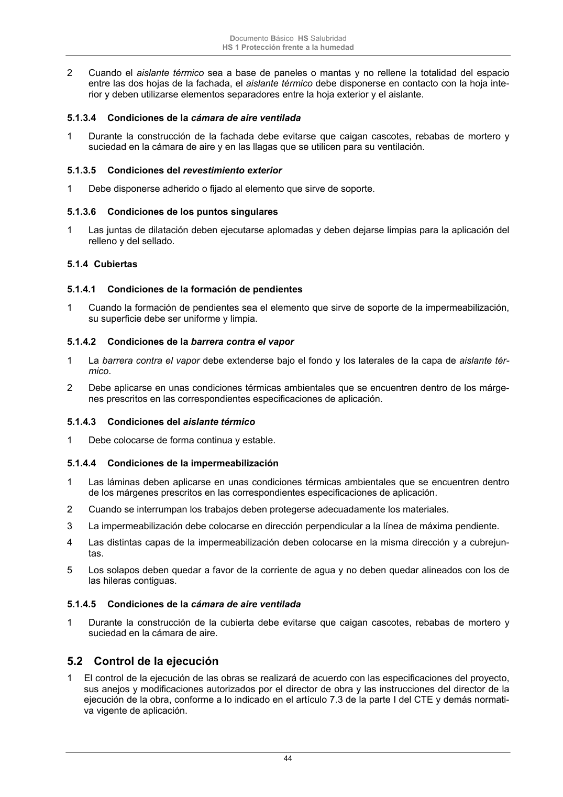

DB-HS Salubridad · edición 2022-06-14 · capa oficial
Documento DB-HS-oficial · SHA-256 del PDF 68df3caacc95f71aee2ec1ba7b2c65ae66155c21e3a8785521b8fdd4fd640d3b
Copia fiel del PDF fuente · Fuente oficial
Ficha de la disposición en la fuente oficial
Formatos: JSON del segmento · Markdown
5.2 Control de la ejecución 1 El control de la ejecución de las obras se realizará de acuerdo con las especificaciones del proyecto, sus anejos y modificaciones autorizados por el director de obra y las instrucciones del director de la ejecución de la obra, conforme a lo indicado en el artículo 7.3 de la parte I del CTE y demás normati- va vigente de aplicación. Documento Básico HS Salubridad HS 1 Protección frente a la humedad 45 2 Se comprobará que la ejecución de la obra se realiza de acuerdo con los controles y con la frecuen- cia de los mismos establecida en el pliego de condiciones del proyecto. 3 Cualquier modificación que pueda introducirse durante la ejecución de la obra quedará en la docu- mentación de la obra ejecutada sin que en ningún caso dejen de cumplirse las condiciones mínimas señaladas en este Documento Básico.
